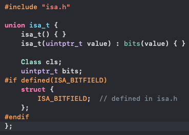
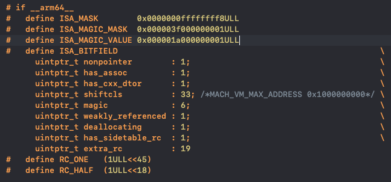

iOS底层探秘之isa
一. iSA是什么?
从源码可知:

结论: isa是对象alloc的时候，伴随初始化的一个属性,isa底层是一个isa_t结构的联合体.
什么是联合体?
当多个数据需要共享内存或者多个数据每次只取其一时，可以利用联合体(union)。在C Programming Language 一书中对于联合体是这么描述的：
1)联合体是一个结构；
2)它的所有成员相对于基地址的偏移量都为0；
3)此结构空间要大到足够容纳最”宽”的成员；
4)其对齐方式要适合其中所有的成员；
二. iSA的结构
isa_t中包含cls类的指针,以及 ISA_BITFIELD 位域.
什么是位域?
位域指信息在存储时，并不需要占用一个完整的字节， 而只需占几个或一个二进制位。例如在存放一个开关量时，只有0和1 两种状态， 用一位二进位即可。为了节省存储空间，并使处理简便，C语言又提供了一种数据结构，称为“位域”或“位段”。所谓“位域”是把一个字节中的二进位划分为几 个不同的区域， 并说明每个区域的位数。每个域有一个域名，允许在程序中按域名进行操作。 这样就可以把几个不同的对象用一个字节的二进制位域来表示。
其中ISA_BITFIELD在不同环境下有不同定义:
1 |
|
三. ISA_BITFIELD参数分析

(上图对应 arm64 架构)
nonpointer ：表示是否对 isa 指针开启指针优化. 0：纯isa指针，1：不⽌是类对象地址,isa 中包含了类信息、对象的引⽤计数等
has_assoc ：关联对象标志位，0没有，1存在
has_cxx_dtor：该对象是否有 C++ 或者 Objc 的析构器,如果有析构函数,则需要做析构逻辑,
如果没有,则可以更快的释放对象
shiftcls: 存储类指针的值。开启指针优化的情况下，在 arm64 架构中有 33 位⽤来存储类指针。
magic：⽤于调试器判断当前对象是真的对象还是没有初始化的空间
weakly_referenced：标志对象是否被指向或者曾经指向⼀个 ARC 的弱变量，没有弱引⽤的对象可以更快释放。
deallocating：标志对象是否正在释放内存
has_sidetable_rc：当对象引⽤计数值⼤于 10 时，则需要借⽤该变量存储进位
extra_rc：当表示该对象的引⽤计数值，实际上是引⽤计数值减 1，例如，如果对象的引⽤计数为 10，那么 extra_rc 为 9。如果引⽤计数⼤于 10，则需要使⽤到下⾯的 has_sidetable_rc。
那么isa具体是怎么运行的呢?
未完待续…
原文作者: Wickyong
原文链接: https://Wickyong.github.io/2020/09/10/iOS底层探秘之isa(前篇)/
版权声明: 转载请注明出处(请保留原文作者署名及原文链接)#copyright description